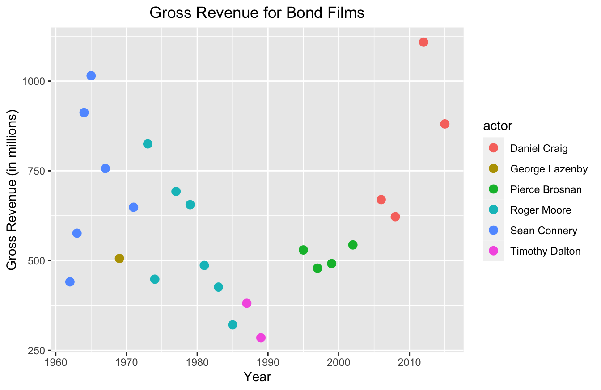

- 1 About This Book
- 2 What is R Programming?
- 3 Getting Setup in R and RStudio
- 4 Object Types in R Programming
- 5 How to Filter and Transform Data in Base R
- 6 How to Filter and Transform Data with the Dplyr Package
- 6.1 Why is
dplyrSo Popular? - 6.2 It’s Still Worth Learning Base R
- 6.3 The
dplyrSyntax - 6.4 Understand the Difference Between Selecting and Filtering
- 6.5 How to Select and Mutate a Data Frame with
dplyrin R - 6.6 How to Filter a Data Frame with
dplyrin R - 6.7 How to Summarize and Group Data with
dplyrin R - 6.8 Things to Remember
- 6.9 Exercises
- 6.1 Why is
- 7 Understanding and Using R Packages
- 7.1 Why Does R Use Packages?
- 7.2 How to Access R Packages
- 7.3 How to Install and Load a Package - The Easy Way
- 7.4 Why You Should Still Learn to Install and Load Packages the “Old Fashioned” Way
- 7.5 How to Install and Load R Packages - The Old Fashioned Way
- 7.6 A Simple Trick to Include Install and Load Any Packages Needed
- 7.7 How to Find New Packages to Install
- 7.8 How to Find Documentation on Packages
- 7.9 Things to Remember
- 7.10 Exercises
- 8 How to Write Functions
- 8.1 Two Approaches to Using R Functions
- 8.2 Why You Should Learn to Write Your Own Functions
- 8.3 The Components of an R Function
- 8.4 Required versus Non-Required Arguments
- 8.5 When Order Matters for Arguments
- 8.6 How to Write Your Own Function
- 8.7 Writing Functions Using Control Flows
- 8.8 Applying a Control Flow to Our Summary Stats Function
- 8.9 Breaking Down the Function We Just Made
- 8.10 Things to Remember
- 8.11 Exercises
- 9 Importing Data into R
- 10 How to Plot Data in R
- 11 Statistical Functions in R: Common Functions and How They Work
- 11.1 How Statistical Functions Work in R Programming
- 11.2 How to Build a Model in R (Example with Linear Regression)
- 11.3 How to Review Common Model Performance Statistics
- 11.4 How to Make Predictions with a Model
- 11.5 How to Save Your Model to Use Later
- 11.6 How to Add Multiple Parameters to a Model
- 11.7 How to Add a Categorical Variable to a Model
- 11.8 How to Add Transformed Variables to a Model
- 11.9 How to Add Variable Interactions to a Model
- 11.10 How to Calculate Model Confidence Intervals
- 11.11 How to Calculate Analysis of Variance Between Models
- 11.12 Other Common Model Types - Logistical Regression
- 11.13 Other Common Model Types - Anova Models
- 11.14 Things to Remember
- 11.15 Exercises
- 12 Answer Key
- 12.1 Chapter 4 - Object Types in R Programming
- 12.2 Chapter 5 - How to Filter and Transform Data in Base R
- 12.3 Chapter 6 - How to Filter and Transform Data with the Dplyr Package
- 12.4 Chapter 7 - Understanding and Using R Packages
- 12.5 Chapter 8 - How to Write Functions
- 12.6 Chapter 10 - How to Plot Data in R
- 12.7 Chapter 11 - Statistical Functions in R
- References
10.1 Which R Plot Package is Best?
That question is a solid “it depends!” And it highlights one of R’s greatest strengths and weaknesses. It’s an open-source language, which has led to multiple packages providing similar purposes, but with subtle differences in functionality.
I’d say the base plot package is definitely the “smarter” pacakge. And by that, I mean it often makes an educated guess on how to plot your data.
For example, you can literally run the plot() function on linear regression models, single variables, and data frames, and the function makes a pretty good assumption of what plots you want to see. This is handy for exploratory data analysis.
I would say the default aesthetics for the base package are not great. As you saw in the last section, ggplot2 and plotly add a bit more flare. That being said, most data viz tools are only as good as their developer. If you know how to use color, font selection, and the right data viz effectively, you can make the base plots look good. It just takes more work, in my experience.
For example, I took our Bond data set and made a data viz with the base package. I changed the color, font, and other settings and managed to make it look pretty good. You can see the code and output below:
bond <- read.csv("https://raw.githubusercontent.com/taylorrodgers/bond/main/bond.csv")
bond$actor <- factor(bond$actor)
bond_colors <- c("#7fb7be","#d3f3ee","#dacc3e","#bc2c1a","#7d1538","#454444")
bond_colors <- bond_colors[as.numeric(bond$actor)]
plot(bond$year,
bond$gross,
bg=bond_colors,
col="black",
cex=2,
pch=21,
xlab="Year Released",
ylab="Gross Revenue (in millions)",
main="Gross Revenue for Bond Films",
col.axis="#454444",
col.main="#454444",
col.lab="#454444",
fg="#454444",
family="Droid Sans"
)
legend("top",inset=0.05,
legend=unique(bond$actor),
cex=.9,pch=21,pt.cex=1.2,
pt.bg=unique(bond_colors))
This wasn’t easy to do though. I had to do more research to figure out how to accomplish the visualizaiton above.
I think ggplot2 has a more intuitive syntax. For example, I produce a similar plot to the one with a much shorter script:
library(ggplot2)
bond <- read.csv("https://raw.githubusercontent.com/taylorrodgers/bond/main/bond.csv")
bond$actor <- factor(bond$actor)
ggplot(data=bond,
mapping=aes(x=year,y=gross,color=actor)) +
geom_point(size=3) +
labs(x="Year",
y="Gross Revenue (in millions)",
title="Gross Revenue for Bond Films") +
theme(plot.title = element_text(hjust = 0.5))
You probably noticed that this script is a lot shorter than the last one. It has a similar syntax to the dplyr package. It uses a + operator to add layers to the plot, similar to how dplyr uses %>% to create a series of data transformations.
And best of all, ggplot2 plots look pretty good. It didn’t take too much work to produce a semi-professional looking graph.
The only thing I don’t like about ggplot2 is the default aesthetics. It looks better than base, but it just looks “busy” to me. I don’t like the gray background of the plot and I don’t like the lines. Most data viz professionals advise keeping your plots somewhat minimalistic.
In order for me to make the plot less busy, I have to write a few additional lines of code:
ggplot(data=bond,
mapping=aes(x=year,y=gross,color=actor)) +
geom_point(size=3) +
labs(x="Year",
y="Gross Revenue (in millions)",
title="Gross Revenue for Bond Films") +
theme(plot.title = element_text(hjust = 0.5),
panel.grid.major = element_blank(),
panel.grid.minor = element_blank(),
panel.background = element_blank(),
axis.line = element_line(color="grey"))
This isn’t a big deal to add this, but it is tedious to do so. Thankfully, there are pre-built themes in the ggthemes package that you can use. They have themes that mimic the aesthetics of the Wall Street Journal, The Economist, FiveThirtyEight, and several other well-known data journalism outlets.
Here’s FiveThirtyEight’s template below:
library(ggthemes)
ggplot(data=bond,
mapping=aes(x=year,y=gross,color=actor)) +
geom_point(size=3) +
labs(x="Year",
y="Gross Revenue (in millions)",
title="Gross Revenue for Bond Films") +
theme_fivethirtyeight()
I personally like the pander theme most of all. It provides just enough detail to help the human eye without becoming too busy.
library(ggthemes)
ggplot(data=bond,
mapping=aes(x=year,y=gross,color=actor)) +
geom_point(size=3) +
labs(x="Year",
y="Gross Revenue (in millions)",
title="Gross Revenue for Bond Films") +
theme_pander()
plotly data viz strikes a good balance between intuitive syntax and great default visualizations. It also provides great resources for building interactive web-based applications. I’ve used it extensively now for building Shiny applications that engineers would use to make predictions. The fact that I can get real specific with event tracking and interactions makes it the best for developers.
Here’s an example:
library(plotly)
plot_ly(data=bond,x=~year,y=~gross,color=~actor,size=10)plotly has a somewhat less intuitive syntax though. The functions become a hierarchy of lists. If you look at the code and output below, you’ll notice that I have to specify formatting options with lists:
library(plotly)
plot_ly(data=bond,x=~year,y=~gross,color=~actor,size=10) %>%
layout(title="Gross Revenue for Bond Films",
xaxis=list(title="Year"),
yaxis=list(title="Gross Revenue (in millions)"))This syntax isn’t too hard to learn, but it does require some practice.